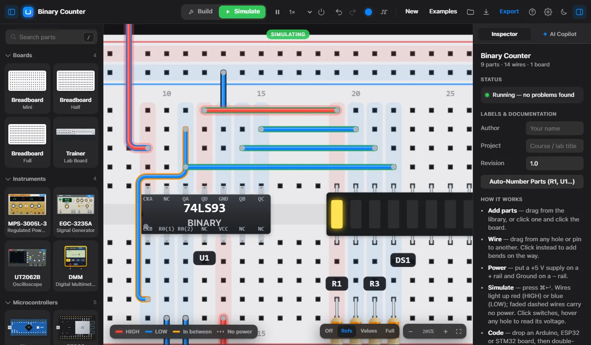
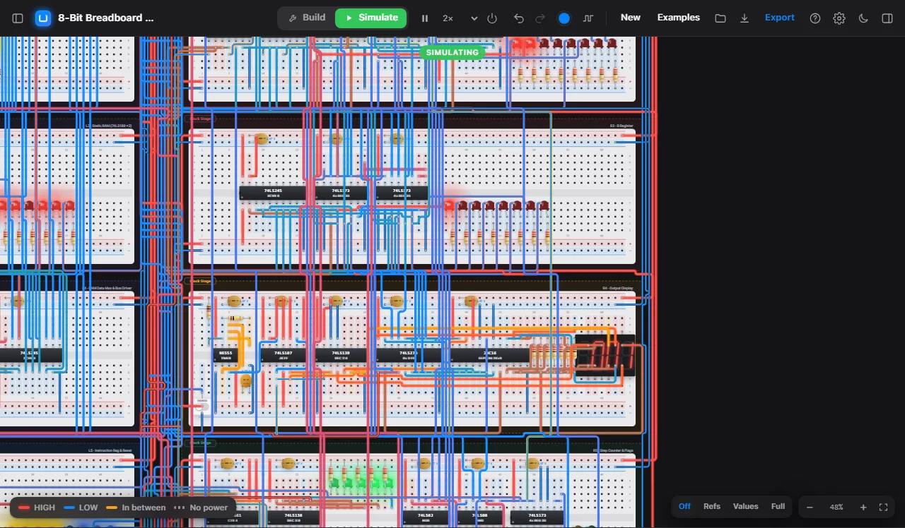
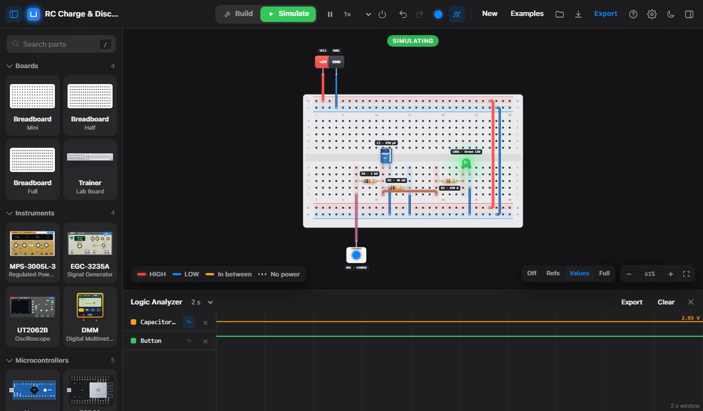

Modified Nodal Analysis
Solves real node voltages and currents across resistors, capacitors, inductors, diodes, BJTs, MOSFETs, and op-amps.
Build on virtual breadboards with real Kirchhoff physics, 74xx logic, op-amps, lab instruments, and a working 14-board 8-bit CPU. No install.
Real electrical models across discrete parts, TTL, analog ICs, and microcontrollers.
Solves real node voltages and currents across resistors, capacitors, inductors, diodes, BJTs, MOSFETs, and op-amps.
Wire real pinouts for 74xx gates, counters, muxes, 555 timers, LM358, LM317, ATmega328P, ESP32, and STM32 boards.
Probe any hole with a dual-trace UT2062B oscilloscope, auto-ranging multimeter, function generator, or logic analyzer.
Ask for a circuit in plain English. Copilot places parts across the breadboard trench, routes wires, and checks voltages.
Run or single-step a 47-IC discrete breadboard computer executing Fibonacci, Powers of 2, and hardware multiplication.
Export IEEE or IEC vector schematics, BOM tables, wiring diagrams, and printable A4 lab reports directly from your board.
Passives, diodes, transistors, 74xx logic, op-amps, regulators, displays, microcontrollers, and bench instruments with accurate pin labels.
Browse LibraryEach starter circuit loads straight onto the breadboard with designators, wires, and probes attached.

Gates, flip-flops, and 4-bit ripple counters wired on a half breadboard.

Full discrete TTL computer with ALU, RAM, EEPROM microcode, and 7-segment output.

RC transients, 555 oscillators, op-amps, and voltage regulators probed live.
It solves real node voltages and currents using Modified Nodal Analysis alongside 74xx digital and MCU models. Capacitors follow RC curves, LEDs enforce forward drop and burnout limits, and op-amps saturate at their supply rails.
No. CircuitForge runs locally in your browser, auto-saves to local storage, and exports circuits as .cforge.json files.
Yes. All 14 breadboards contain 47 real 74xx ICs and 773 wires: clock, program counter, MAR, 16-byte RAM, instruction register, ALU, output decoder, and EEPROM control logic.
IEEE/ANSI and IEC/DIN vector SVGs, 3× PNGs, BOM tables, CSV waveform captures, and A4 engineering lab reports ready to save as PDF.
It can place any of the 117 parts on the breadboard, wire nets cleanly, inspect your existing circuit for shorts or missing power, and probe output voltages.
Open an empty breadboard or boot a 14-board 8-bit CPU directly in your browser.
Open Studio